学生内部网
教师内部网
查看日志
导航
首页
学院概况
学院简介
组织架构
教工之家
职能部门
历史沿革
师资队伍
在职教师
按职称
按拼音
人才计划
国家杰出青年科学基金...
973 首席科学家（青年...
国家自然科学基金优秀...
教育部新世纪优秀人才...
上海市领军人才
上海市优秀学术带头人...
上海市青年拔尖人才计...
上海市曙光计划
上海市晨光计划
上海市启明星计划
上海市浦江人才计划
上海市扬帆计划
兼职客座
退休教师
B
C
D
F
G
H
J
K
L
M
N
P
Q
S
T
W
X
Y
Z
人才培养
本科生教学
教学动态
专业介绍
培养方案
常用文档
研究生教学
教学动态
招生信息
培养方案
课程建设
学位申请
非全专硕
教学成果
精品课程
一流课程
教学成果奖
课程思政
工作动态
建设成果
机构设置
相关文档
科学研究
科研快讯
科研机构
省部级科研平台
校级科研平台
学科方向
科研成果
国家级奖项
省部级奖项
学生工作
学生活动
通知公告
党建思政
二十大专栏
理论学习
不忘初心 牢记使命
经典文献
政策法规
党建动态
工青妇建
工会活动
青年联谊
妇女风采
退休园地
退休动态
退休党建
退休风采
对外交流
交流动态
海外交流
合作高校
学生交流
教师交流
校友中心
院友会
活动纪实
院友风采
理事会
章程
发展基金
新闻动态
基金项目
捐赠指南
捐赠鸣谢
学生活动
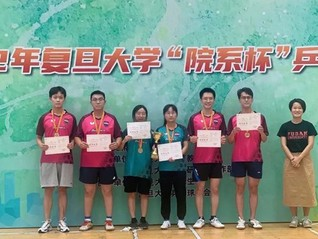
同心协力，顽强“乒”搏 | 我院乒乓球队获2022年复旦大学“院系杯”团体赛冠军
2022-09-30
从小组第二出线，到一路披荆斩棘杀入决赛，再到决赛“复仇”小组赛输过的对手，夺得院系杯团体赛冠军，我院乒乓球队的同学们，打出了自己的气势，创造了我院在院系杯的最好成绩，展现了计算机人的风采。图｜计算机科学技术学院乒乓球队本届院系杯乒乓球团体赛在正大体育馆举行，共有35个院系参加，采用三盘两胜的比赛规则，每场比赛分为男单、混双和女单三盘，每个同学只能出战其中的一场比赛，这就要求团队成员要有均衡的实力，只靠强大的个人是不行的。而我院同学的阵容，可以说完美符合了实力均衡的特点。队伍名单-男运动员-钟宇航、邢惠锋、郭武楠、徐豪-女运动员-戴章园、方煊杰、杨延鑫本次比赛，我院共有4位男生和3位女生报名参加。郭武楠、戴章园同学此前多次代表我院参加院系杯，为我院赢得诸多荣誉；方煊杰同学也曾入选复旦大学校队，实力强悍；钟宇航同学在本科期间就是校队队长，是国家二级运动员；邢惠锋是2021年新生杯的男子单打冠军，是我校乒乓球校队现役成员；徐豪也曾杀入新生杯的男单八强。这样的一只队伍，被其他学院的同学称作“四个二加两个王”王牌组合，是各个学院抽签都不希望碰到的“夺冠大热门”。｜第一阶段-小组赛｜2022年9月
全文》
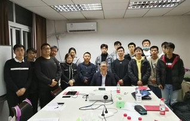
计算机学院召开学生发展对象座谈会
2021-11-22
2021年11月9日下午，计算机科学技术学院关工委分会和学生党总支在计算中心楼A313会议室召开研究生和本科生发展对象座谈会，会议围绕总书记“七一”重要讲话精神、十九届六中全会精神和党史学习，结合自身实际，探讨新时代青年应该如何“做合格党员”。共有16位学生发展对象参加，会议由特邀党建组织员刘其真老师主持。座谈会于15：40开始，会场上大家发言踊跃，有的同学还做了再次补充发言，刘其真老师认真听取了各位同学的发言并作简要记录，期间还进行了五次有针对性的点评，并用一些生动的例子扩充讲述，同学们都认真聆听刘老师的发言，边听边做摘记，有的同学还不时点头表示赞同。来自软件工程19级的赵瑞同学说，在远大理想和不改初心的支持下，将我们的行为落到实处，那么怎样的诱惑都不会将我们击垮。他动情地回忆了自己去年疫情期间在乡镇挂职三个月，每天志愿服务三个小时以上，认为“那是我人生中最为宝贵的一段经历。深入基层的了解让我亲眼见证了我们党对人民群众生命财产安全的关怀与重视，看到了基层干部舍生忘死奋斗一线的坚持，这在其他任何一个国家都是看不到的。”博士研究生侯慧莹同学说，就我学习的专业而言，关系着国家发展和进步，是
全文》
师说心语｜彭鑫老师专访
2021-07-30
老师简介鑫老师是复旦大学计算机科学技术学院副院长、教授、博士生导师。于2001年和2006年分别在复旦大学取得计算机专业学士和博士学位。彭老师所领导的复旦大学CodeWisdom团队关注于大数据、人工智能与软件工程的结合，具体研究方向包括代码大数据分析、软件智能化开发、云原生与智能化运维、人机物融合泛在系统软件、机器人软件技术。同时，他也担任软件学院软件工程本科课程的主讲教师。彭鑫教授问答环节MSCer：您当初报考大学的时候计算机应该算是新兴专业，您是出于什么样的原因选择了这个专业呢？彭鑫老师：我是九七年进入复旦的，读高中的时候确实很少有计算机。当时在我们学校旁边有一家比较新兴的店，放了几台电脑可以用来玩游戏，现在回想起来是早期的类似于三国一类的游戏，当时跟着同学去玩还是觉得挺有意思的。其实我高中是化学课代表，高考之后化学老师建议我报考化学，但是我觉得我对化学好像不是很感兴趣。虽然当时对计算机基本上没什么了解，只是接触过几次，还是把电脑当成游戏机来用的，但是感觉挺有意思，所以我就选了计算机。MSCer：在本科四年的学习过程中，您对计算机的认识有一个什么样的变化呢？彭鑫老师：说到变化的话
全文》
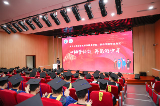
心栖梦归处，再见仍少年｜计算机科学技术学院、软件学院2020届、2021届春季毕业生返校活动暨毕业典礼圆满举行
2021-07-15
6月26日上午9点，复旦大学计算机科学技术学院、软件学院2020届、2021届春季毕业生返校活动暨毕业典礼在江湾二号交叉学科楼E1006报告厅隆重举行。参加本次毕业典礼的有学院党委书记王新老师，院长姜育刚老师，学院副院长曹瑜老师，达观数据董事长陈运文，导师代表韩伟力教授、张文强教授、阚海斌教授、卢暾教授，2020届本科生毕业班辅导员李俊毅、解戎及2020届、2021届春季毕业生，典礼由学院党委副书记沈安怡老师主持。在庄严的国歌声中，毕业典拉开了帷幕。2020届软件工程专业本科毕业生邱轶扬、2020届计算机软件与理论专业硕士毕业生励益韬为大家分享了从母校毕业后，在新的工作岗位上的所思所感。邱轶扬分享了在哔哩哔哩工作中收获的经验，在毕业后，他有成长也有迷茫，最终也找寻到了生活的答案，目前即将赴加州大学圣地亚哥分校继续学习计算机科学，他希望大家无论前途多么崎岖，都能够笃志前行，向着自己的目标无畏前行。励益韬毕业后成为了一名选调生，他向大家讲述了在基层居委会挂职锻炼中的种种经历，在除夕夜和民警一起巡逻、参与居委换届工作、参与组织疫苗接种等工作都成为了他难忘的、值得骄傲的经历。坚守初心、永远学习
全文》
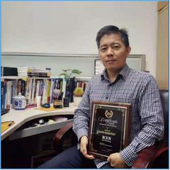
师说心语｜赵卫东老师专访
2021-06-16
赵卫东，东南大学博士，复旦大学博士后，香港大学和纽约大学2012年访问学者。主要负责本科生和各类研究生机器学习、大数据核心技术和商务数据分析等课程的教学。商务智能被评为上海市精品课程，获得2013年高等教育上海市教学成果奖二等奖。目前主要研究方向包括电子推荐技术、机器学习与深度学习应用和大数据分析等。主持2项国家自然科学基金、国家重点研发计划子课题、上海市浦江人才以及30多项企业合作课题，获得各类教学研究项目40多项。
全文》
师说心语 | 金玲飞老师：不忘初心，不负韶华
2021-06-15
金玲飞，复旦大学计算机科学技术学院副教授，博导。2013年在新加坡南洋理工大学获得博士学位，分别在荷兰的信息科学研究中心和新加坡的南洋理工大学做过博士后。主要研究方向为编码与密码，包括经典纠错码，量子纠错码，基于编码的密码等。目前已在IEEE Trans. On Information Theory 等杂志发表文章30余篇。
全文》
师说心语｜钱振兴老师：寻找人生灯塔
2021-06-15
钱振兴教授钱振兴，本科和博士均毕业于中国科学技术大学，目前是复旦大学计算机学院教授、博导，担任文旅部文旅智能计算重点实验室副主任。主要从事多媒体信息安全、隐蔽通信等方面的研究，发表论文百余篇。主持国家自然科学基金重点项目、国家重点研发计划课题等多个项目。相关研究成果在国务院文旅部、国家有关部门、凤凰传媒、新华传媒、上海文广等单位获得应用。曾获得中国产学研合作创新成果奖、中国发明创业成果奖二等奖，担任中国图象图形学会数字媒体取证与安全、中国电子学会多媒体信息安全专委会委员。
全文》
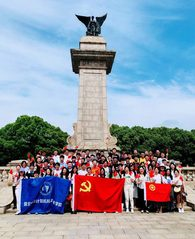
乘坐 “初心号”，红色观影路 ——计算机学院党史学习主题教育活动顺利开展
2021-06-11
为迎接中国共产党成立100周年，计算机科学技术学院党委联合学院团委于2021年6月8日下午成功举办了“乘坐‘初心号’，红色观影路”党史学习教育参观活动，前往上海影视乐园进行了一次别致的“沉浸式”党史教育学习。来自学院教职工党支部、各学生党支部以及学院团委的70余名党员和团员积极参与了本次实践活动。习近平总书记曾强调:“一切向前走，都不能忘记走过的路；走得再远，走到再光辉的未来，也不能忘记走过的过去，不能忘记为什么出发”。因此，本次党史学习参观中计算机学院的师生跟随“初心号”红色巴士的脚步，充当了一次“时间旅行者”，在复原历史建筑中见证1920年《共产党宣言》第一本中文全译本的诞生、聆听1921年中共一大代表们激昂的讨论、体验五卅运动中群众反帝爱国的决心、重温经典红色革命影片的不朽，通过场馆参观、互动体验、街头观演等方式，进一步加深了党史学习的领悟。首先参观的是上海影视乐园研学基地的红色电影道具展，通过对参与过红色电影制作的真实武器、弹药、书信等道具的参观，直观地体会到新中国成立的来之不易。接下来，师生们来到《望道》电影的取景地之一浙大一师仿真建筑，倾听了陈望道老校长“蘸墨水吃粽子”的故
全文》
计算机科学技术学院研究生班长交流会顺利举行
2021-03-18
2021 年 3 月 16 日，计算机科学技术学院组织研究生各班班长、班级骨干参加交流会。学院研工组
全文》
计算机学院组织开展学生党支部书记述职考评工作
2021-01-08
12 月 29 日下午，在江湾校区交叉二号楼 A1010 会议室，计算机学院学生党总支组织学生党支部
全文》
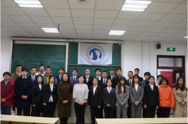
计院团学再出发|计算机科学技术学院第八届学生代表大会
2020-12-17
2020 年 12 月 15 日，复旦大学计算机科学技术学院第八届学生代表大会（以下简称学代会）在
全文》
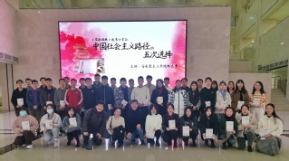
计算机科学技术学院 2019 级硕士党支部举办《筚路维艰——中国社会主义路径的五次选择》读书会
2020-12-02
为深入学习贯彻党的十九届五中全会精神，进一步加强 “四史” 学习教育，11 月 28 日下午计算机科
全文》
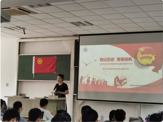
学四史 ｜学院举行纪念中国人民抗日战争暨世界反法西斯战争胜利 75 周年主题团日
2020-10-01
2020 年是纪念中国人民抗日战争暨世界反法西斯战争胜利 75 周年。新学期始，校党委发出了组织 “
全文》
向抗击新冠肺炎疫情医护人员学习计算机学院研究生团支部举行战 “疫” 青年分享会
2020-05-17
2020 年 5 月 16 日下午两点半，计算机科学技术学院 2019 级硕士生第七团支部、2019
全文》
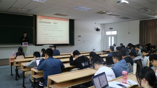
计算机学院开展纪念五四运动 100 周年主题团日活动
2019-05-08
5 月 7 日，计算机科学技术学院开展纪念五四运动 100 周年主题团日活动，通过知识问答、观看纪念
全文》
我院雷涛、加星获复旦大学研究生五四演讲比赛二等奖、三等奖
2019-05-05
为纪念五四运动 100 周年，深入学习贯彻习近平新时代中国特色社会主义思想，继承和发扬五四精神，复旦
全文》
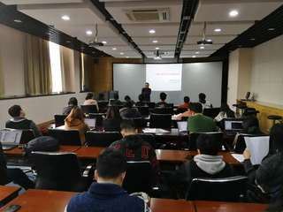
计算机学院召开本学期第一次学生党支部书记联席会议
2019-04-16
4 月 11 日中午，计算机学院在张江校区软件楼 105 会议室召开学生党支部书记联席会议，开展党务
全文》
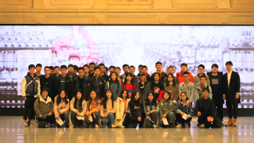
学史明志，立心笃行 ——计算机科学技术学院 2017 级本科生党章学习小组赴上海历史博馆物参观学习
2019-03-29
2019 年 3 月 24 日上午，计算机科学技术学院 2017 级本科生党章学习小组同学（含 20
全文》
每页
18
记录
总共
167
记录
第一页
<<上一页
下一页>>
尾页
页码
1
/
10
跳转到
重要通知
复旦大学2025年信息学学科冬令营 报名通知
12-23
复旦大学计算机科学技术学院2025年博士研究生招生“申请-考核”制选拔办法
11-30
2023-2024学年计算机科学技术学院 社会冠名奖学金拟获得者公示
11-08
更多
学生活动
同心协力，顽强“乒”搏 | 我院乒乓球队获2022年复旦大学“院系杯”团体赛冠军
09-30
计算机学院召开学生发展对象座谈会
11-22
师说心语｜彭鑫老师专访
07-30
更多
讲座信息
11.19 | AI Networking for Remote CV: A Use Case in Subway E-Ticketing
11-19
08.16｜Symmetric Exponential Time Requires Near-Maximum Circuit Size
08-12
07.03 | 时间约束的极早检测 Early Detection of Temporal Constraint Violations
07-01
更多